Praktikum 8 membahas HTTP Request dan Integrasi API pada aplikasi Flutter ResepKu. Pada Modul 7, data resep masih berasal dari daftar yang ditulis langsung di dalam kode. Pada praktikum ini sumber data dipindahkan ke REST API https://dummyjson.com/recipes, sehingga aplikasi dapat mengambil data dari server, menampilkan status proses, dan mengirim data melalui request HTTP.
Setelah menyelesaikan praktikum, mahasiswa diharapkan mampu:
- memahami struktur respons JSON dari REST API dan mengubah objek JSON menjadi model
Recipemenggunakanfactory Recipe.fromJson(); - melakukan request
GETmenggunakan packagehttpmelalui class service yang terpisah dari tampilan; - menampilkan data menggunakan
FutureBuilderdengan loading state, error state, tombol coba lagi, dan pull-to-refresh; - mengirim resep baru menggunakan request
POSTmelalui halaman form serta memvalidasi input pengguna; - mengimplementasikan pencarian resep, mengubah nama resep menggunakan
PUT, dan menghapus resep menggunakanDELETE; - menguji model dan service menggunakan
MockClientsehingga pengujian tidak membutuhkan koneksi internet.
1. REST API dan HTTP Request. REST API merupakan antarmuka yang memungkinkan aplikasi berkomunikasi dengan server melalui HTTP. Aplikasi mengirim request ke endpoint tertentu, kemudian server mengembalikan response yang berisi status dan data. ResepKu menggunakan DummyJSON sebagai REST API latihan.
| Method | Endpoint | Fungsi pada ResepKu |
|---|---|---|
GET | /recipes?limit=50 | Mengambil daftar resep dari server. |
GET | /recipes/search?q=... | Mencari resep berdasarkan kata kunci. |
POST | /recipes/add | Mengirim data resep baru dari form. |
PUT | /recipes/{id} | Mengirim perubahan nama resep. |
DELETE | /recipes/{id} | Mengirim permintaan penghapusan resep. |
2. JSON dan Model. JSON (JavaScript Object Notation) adalah format pertukaran data yang umum dipakai API. Respons daftar resep memiliki objek terluar dengan key recipes yang berisi array objek resep, serta informasi seperti total, skip, dan limit. Factory fromJson mengubah setiap objek JSON menjadi instance Recipe agar data mempunyai tipe yang konsisten di dalam aplikasi.
3. Future, async/await, dan FutureBuilder. Request HTTP membutuhkan waktu sehingga hasilnya tidak langsung tersedia. Future merepresentasikan hasil operasi asynchronous. Kata kunci async dan await digunakan agar operasi asynchronous dapat ditulis secara berurutan. FutureBuilder menghubungkan Future dengan antarmuka, sehingga UI dapat menampilkan loading, error, atau data sesuai kondisi request.
| Kondisi | Makna | Respons UI |
|---|---|---|
ConnectionState.waiting | Request masih berjalan dan data belum tersedia. | Menampilkan CircularProgressIndicator. |
snapshot.hasError | Request gagal atau service melempar exception. | Menampilkan ErrorView dan tombol Coba lagi. |
snapshot.hasData | Respons berhasil dibaca. | Menampilkan daftar resep, atau pesan bila daftar kosong. |
4. Pemisahan service dari UI. Class RecipeService bertanggung jawab atas komunikasi HTTP, parsing respons, timeout, dan pemeriksaan status. Widget cukup memanggil method seperti fetchRecipes() atau addRecipe(). Pemisahan ini membuat kode lebih terorganisasi, dapat digunakan ulang, dan lebih mudah diuji.
5. Dependency Injection dan MockClient. Constructor RecipeService menerima http.Client dari luar. Pada aplikasi normal, service menggunakan client HTTP biasa. Saat pengujian, client tersebut diganti dengan MockClient yang memberikan respons palsu. Dengan demikian, unit test dapat dijalankan tanpa menghubungi internet.
6. Status HTTP dan penanganan error. Status 2xx menunjukkan request berhasil. Status non-2xx ditangani dengan melempar RecipeServiceException, sehingga halaman dapat menampilkan pesan kesalahan. Request juga dibatasi dengan timeout agar aplikasi tidak menunggu server tanpa batas waktu.
POST, PUT, dan DELETE pada DummyJSON hanya simulasi. Server mengembalikan respons seolah data berhasil ditambah, diubah, atau dihapus, tetapi perubahan tidak disimpan permanen. Karena itu, data hasil POST tidak muncul setelah daftar dimuat ulang.- Laptop atau komputer untuk menjalankan Flutter dan mengembangkan aplikasi.
- Flutter SDK versi stable dan Dart SDK.
- Visual Studio Code dengan ekstensi Flutter dan Dart.
- Android Emulator atau perangkat Android sebagai target aplikasi.
- Koneksi internet untuk mengakses DummyJSON dan mengunduh package.
- Project ResepKu dari Modul Praktikum 7 (project dilanjutkan, bukan membuat project baru).
- Package
httpuntuk request HTTP,provideruntuk dependency pada service dan state aplikasi, sertacached_network_imageyang tetap digunakan pada halaman detail versi SliverAppBar. - Package pengujian
flutter_testdanMockClientdaripackage:http/testing.dart. - REST API DummyJSON:
https://dummyjson.com/docs/recipes.
Praktikum dilanjutkan dari project ResepKu Modul 7. Struktur UI list, grid, kartu resep, fitur favorit, tema, dan komponen gambar tetap digunakan. Perubahan utama dilakukan pada sumber data: daftar dummy diganti dengan data REST API, kemudian ditambahkan fitur pengiriman resep baru.
CustomScrollView dan SliverAppBar dari bonus Modul 7, bagian langkah memasak harus ditambahkan sebagai sliver. Menu ubah dan hapus pada Latihan 2 juga ditempatkan di actions milik SliverAppBar, setelah tombol favorit.Langkah pertama adalah memeriksa bentuk data yang dikirim server sebelum membuat model. URL yang dibuka pada browser laptop adalah https://dummyjson.com/recipes?limit=2. Respons menunjukkan bahwa daftar resep berada pada key recipes, sedangkan objek terluar juga memiliki informasi jumlah data dan batas hasil.
| Pertanyaan | Jawaban / hasil pengamatan |
|---|---|
Nilai total | 50, yaitu jumlah resep pada dataset DummyJSON. |
| Key yang berisi daftar resep | recipes, berupa array/list objek resep. |
Tipe nilai rating pada resep pertama | double (angka desimal) pada respons yang diamati. |
| Tiga key yang belum ada pada model Recipe Modul 7 | instructions, tags, dan mealType. Field instructions digunakan untuk menampilkan langkah memasak pada halaman detail. |
- Key
recipesdigunakan untuk mengambil array resep dari response JSON. - Setiap item di dalam array merupakan satu objek resep dengan pasangan key dan value.
- Nilai
ratingperlu dibaca sebagai tipenumsebelum dikonversi kedouble, karena JSON dapat memberikan angka dalam bentuk integer atau desimal. - Perbandingan dengan model Modul 7 memperlihatkan bahwa beberapa data baru tersedia dari API, terutama
instructionsuntuk menampilkan urutan memasak.
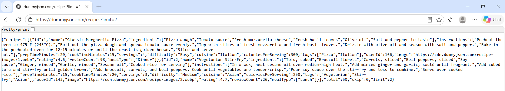
Package http dipasang agar aplikasi dapat mengirim request GET, POST, PUT, dan DELETE. Perintah dijalankan pada terminal di dalam folder utama project resepku.
- Perintah
flutter pub add httpmenambahkan packagehttpke bagiandependenciespadapubspec.yaml. - Package ini menyediakan HTTP client yang digunakan untuk mengirim request ke endpoint REST API.
- Setelah proses selesai, dependency diunduh dan project dapat menggunakan import
package:http/http.dart.
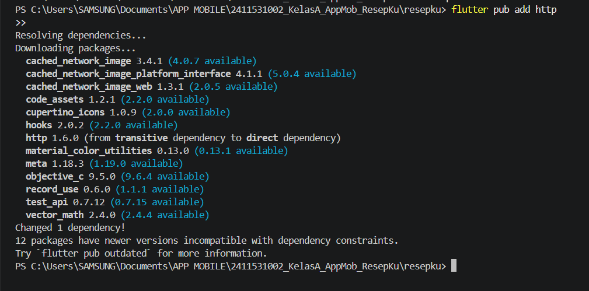
Model Recipe disesuaikan agar dapat menerima data yang berasal dari JSON. Perubahan dilakukan pada file lib/models/recipe.dart dengan menambahkan field instructions serta factory Recipe.fromJson(). Field tersebut memungkinkan satu objek JSON dari server diubah menjadi objek Recipe yang digunakan oleh halaman aplikasi.
factory Recipe.fromJson(Map<String, dynamic> json)membuat objekRecipeberdasarkan pasangan key dan value dari respons JSON.- Field wajib seperti
iddannamedibaca dari key yang sesuai, sedangkan field opsional memakai nilai bawaan seperti'-',0, atau''agar data yang tidak tersedia tidak menyebabkan parsing gagal. (json['rating'] as num? ?? 0).toDouble()menerima angka bertipe integer maupun desimal, kemudian mengubahnya menjadidouble. Dengan demikian, nilai5dapat dibaca sebagai5.0.List<String>.from(...)mengubah array pada JSON menjadiList<String>untuk field bahan dan langkah memasak.- Parameter
instructions = const []menyediakan daftar kosong sebagai nilai bawaan apabila langkah memasak tidak tersedia.
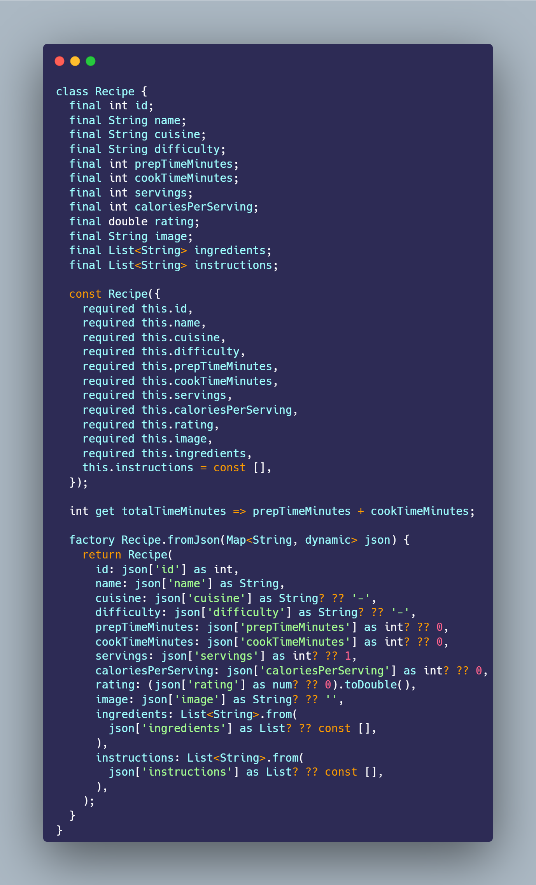
Setelah model siap membaca response API, file lib/data/dummy_recipes.dart beserta folder data dihapus. Mulai tahap berikutnya, data resep tidak lagi diambil dari daftar yang ditulis langsung di source code, melainkan dari RecipeService.
Penghapusan file dummy menyebabkan referensi dummyRecipes pada HomePage sementara menampilkan error. Hal tersebut wajar karena HomePage memang akan diubah pada Bagian B untuk menggunakan data hasil fetchRecipes().
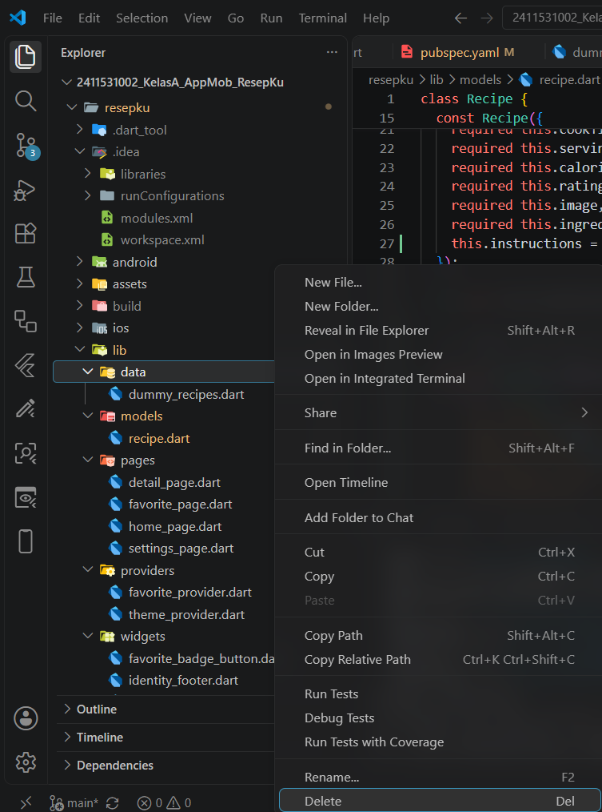
Semua komunikasi dengan REST API ditempatkan di satu class yaitu lib/services/recipe_service.dart. Widget tidak mengirim HTTP request secara langsung. Service menggunakan base URL DummyJSON, menyediakan HTTP client yang dapat diganti saat pengujian, serta memberi batas waktu request selama 10 detik.
http.Client? clientmemungkinkan service menerima client dari luar. Jika tidak diberikan, service membuat client HTTP biasa._client.get(uri)mengirim request GET ke endpoint daftar resep..timeout(_timeout)membatasi waktu tunggu request menjadi 10 detik.jsonDecodemengubah teks JSON menjadi Map, lalu daftar padabody['recipes']dipetakan menjadi objekRecipe._checkStatusmemeriksa status response. Status di luar rentang 2xx akan menghasilkanRecipeServiceException.close()menutup HTTP client ketika service tidak lagi digunakan.
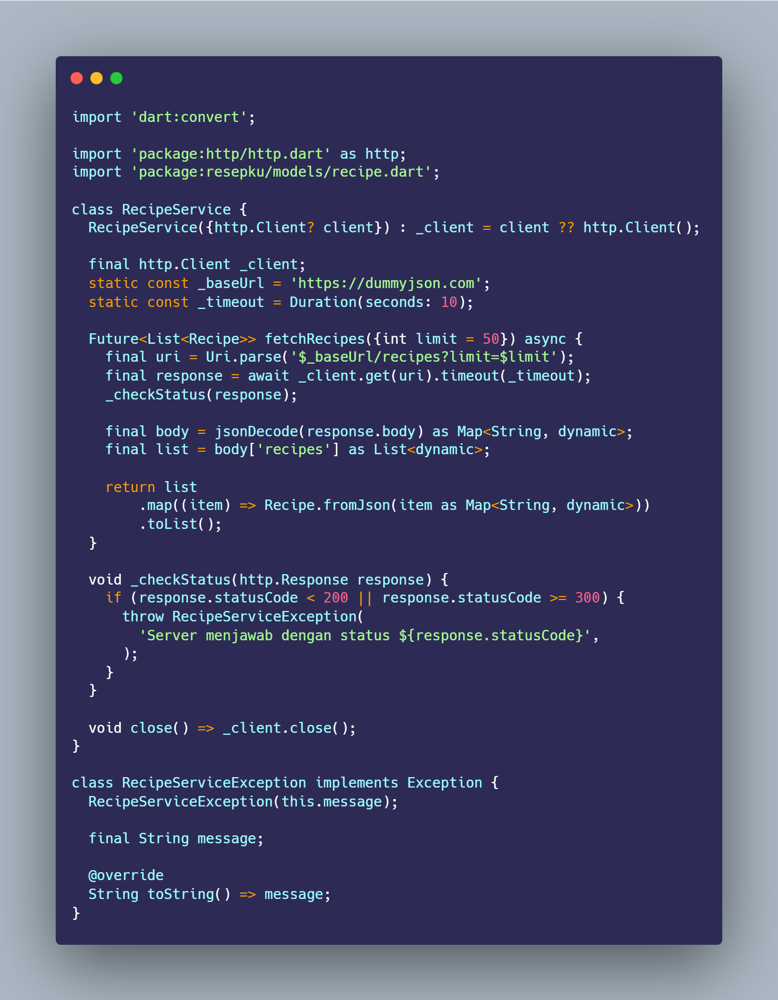
Service didaftarkan di lib/main.dart menggunakan Provider biasa karena RecipeService tidak menyimpan state UI yang berubah dan tidak memerlukan notifyListeners(). Provider lain yang sudah ada, seperti FavoriteProvider dan ThemeProvider, tetap dipertahankan.
Providermembuat satu instanceRecipeServiceyang dapat diakses oleh widget di bawahnya.disposememastikan HTTP client ditutup ketika Provider dibuang.- Provider harus berada di atas
MaterialAppagar halaman yang dibuka dengan Navigator dapat mengakses service. - Pada project ini, getter tema yang digunakan adalah
ThemeProvider.themeModesesuai implementasi ThemeProvider yang dipakai di project.
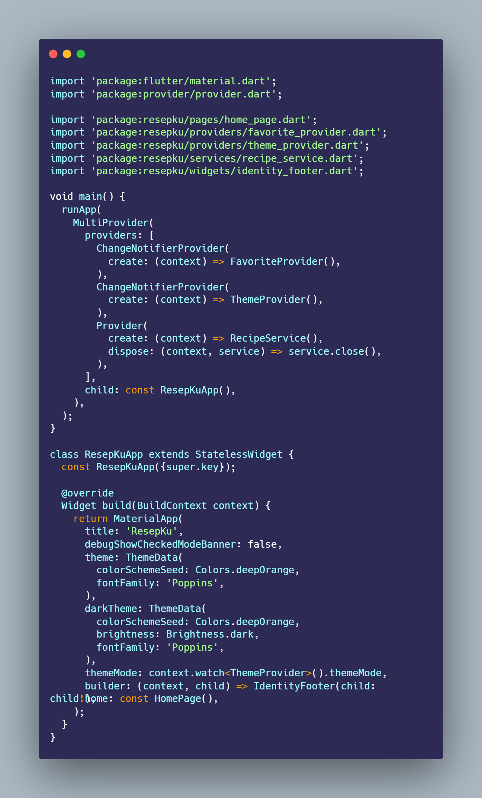
File lib/widgets/error_view.dart dibuat agar pesan kegagalan request dapat digunakan kembali pada beberapa halaman. Widget ini menampilkan ikon koneksi bermasalah, pesan error, dan tombol Coba lagi.
- Parameter
messagemenerima pesan yang akan ditampilkan. - Parameter
onRetrymenerima callback untuk memulai request ulang. FilledButton.iconmenggabungkan ikon refresh dengan label Coba lagi.- Dengan widget terpisah, HomePage dan SearchPage dapat menggunakan tampilan error yang konsisten.
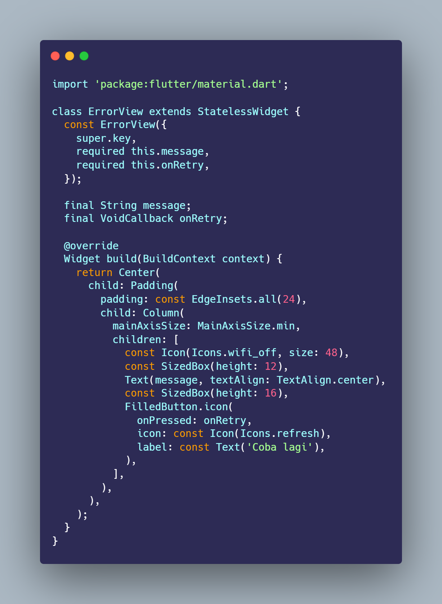
HomePage diubah menjadi StatefulWidget karena perlu menyimpan Future hasil request serta state tampilan list atau grid. Request pertama dibuat satu kali di initState(), sedangkan request ulang dibuat melalui method _reload().
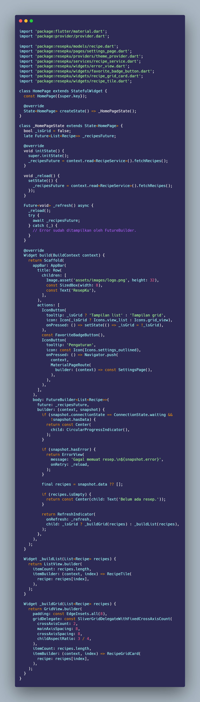
initState()menjalankan request pertama ketika state halaman dibuat._reload()membuat Future baru di dalamsetStateagar FutureBuilder mengulang request.- Loading ditampilkan ketika request masih menunggu dan data belum tersedia.
- Error diperiksa sebelum data ditampilkan, lalu diarahkan ke
ErrorView. - Data sukses dikirim ke fungsi pembangun list atau grid. Data favorit, tombol pengaturan, dan tombol pergantian tampilan tetap digunakan.
RefreshIndicatordigunakan agar pengguna dapat menarik daftar ke bawah untuk melakukan pull-to-refresh.
fetchRecipes() dipanggil langsung di dalam build(), setiap perubahan state, misalnya menekan tombol grid, dapat membuat request baru. Dengan menyimpan Future di field dan menginisialisasikannya di initState(), pergantian tampilan tidak mengulang request.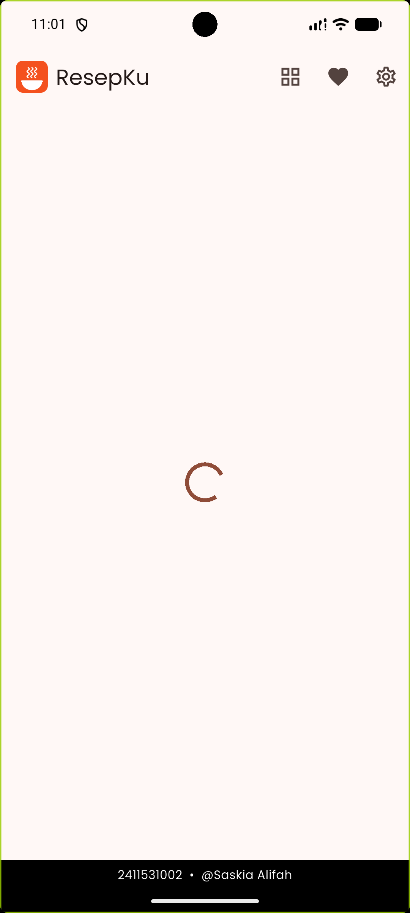
Data resep dari API memiliki field instructions. Karena project menggunakan CustomScrollView dan SliverAppBar, widget biasa seperti judul dan daftar langkah harus diletakkan dalam bentuk sliver. Tiga bagian ditambahkan setelah SliverList.builder yang menampilkan bahan.
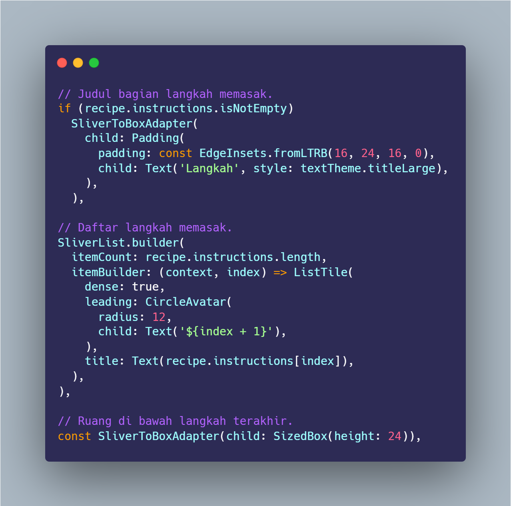
SliverToBoxAdaptermembungkus widget biasa agar dapat menjadi anak dariCustomScrollView.- Judul Langkah hanya ditampilkan jika
instructionstidak kosong. SliverList.buildermembangun setiap langkah secara efisien berdasarkan index.- Nomor langkah dimulai dari satu, yaitu
index + 1. - Sliver terakhir memberi ruang di bawah item terakhir. ListView biasa tidak dimasukkan ke dalam SliverToBoxAdapter karena dapat menyebabkan viewport tidak memiliki batas tinggi.
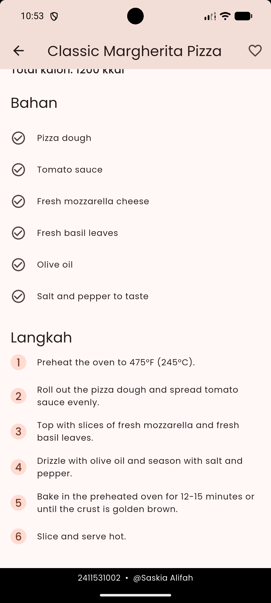
Pengujian dilakukan untuk memastikan aplikasi tetap memberi respons ketika tidak dapat mengakses server. Mode pesawat diaktifkan, kemudian aplikasi di-hot restart. HomePage menampilkan ErrorView. Setelah mode pesawat dimatikan, tombol Coba lagi ditekan agar daftar resep dimuat kembali. Selanjutnya daftar ditarik ke bawah untuk menguji pull-to-refresh.
- Saat jaringan tidak tersedia, request gagal dan FutureBuilder mengarahkan tampilan ke ErrorView.
- Ketika koneksi kembali tersedia, tombol Coba lagi membuat Future baru dan memuat ulang data.
- Pull-to-refresh menjalankan request ulang melalui method refresh.
- Saat refresh, data lama tetap dapat terlihat sampai hasil request baru diterima.
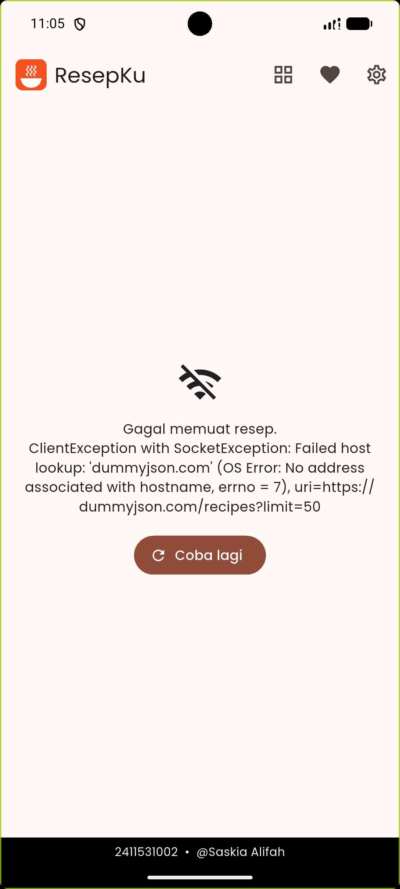
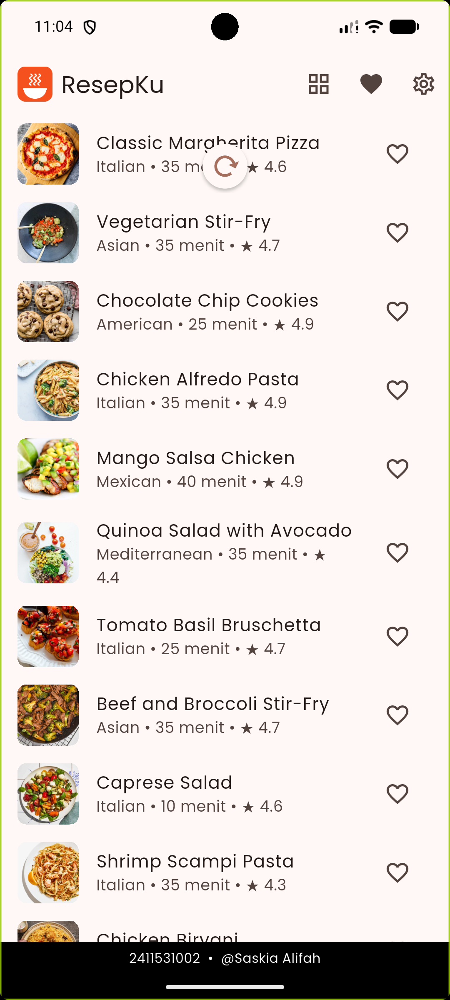
Method addRecipe() ditambahkan ke RecipeService. Method ini menerima nama resep, jenis cuisine, dan waktu memasak. Data dikirim ke endpoint POST /recipes/add dalam bentuk JSON.
_client.post()mengirim data ke endpoint tambah resep.- Header
Content-Type: application/jsonmenandakan body request berupa JSON. jsonEncodemengubah Map menjadi teks JSON.- Respons diperiksa melalui
_checkStatus, lalu diubah menjadi objekRecipemenggunakanfromJson. - Field yang tidak dikirim akan menggunakan nilai bawaan pada model.
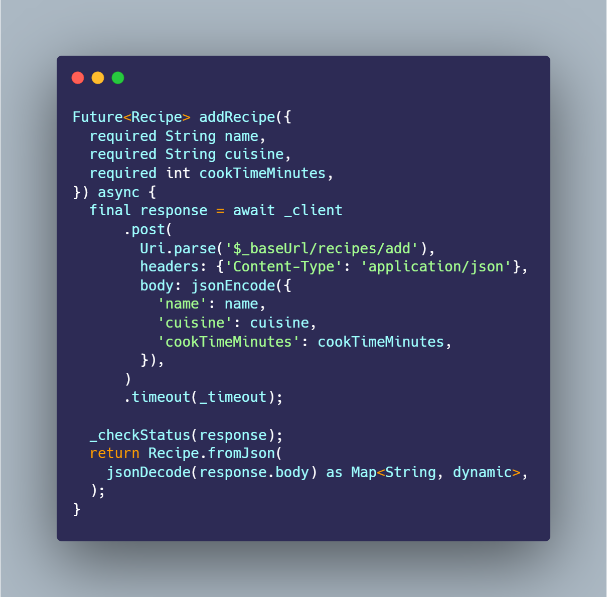
Halaman lib/pages/add_recipe_page.dart dibuat sebagai form untuk mengisi data resep baru. Halaman menggunakan StatefulWidget karena menyimpan controller TextFormField dan status proses penyimpanan.
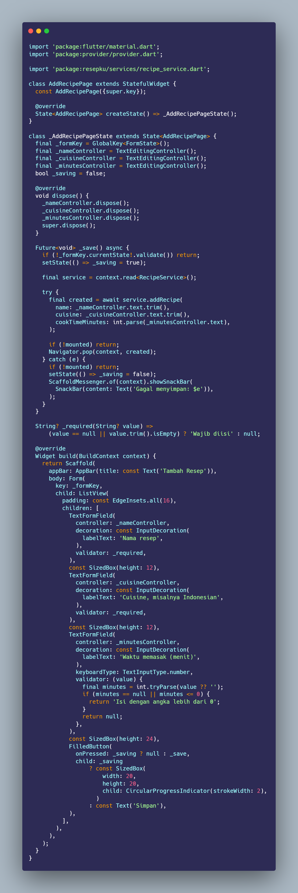
_formKeydigunakan untuk menjalankan validasi seluruh form._nameControlleruntuk nama resep,_cuisineControlleruntuk cuisine, dan_minutesControlleruntuk waktu memasak.- Validator nama dan cuisine memastikan isian tidak kosong. Validator waktu memasak memastikan nilai berupa angka lebih dari nol.
- Variabel
_savingmenonaktifkan tombol Simpan selama request berjalan dan menampilkan indikator kecil. - Controller ditutup melalui
dispose()agar resource tidak tertinggal. - Setelah request selesai,
if (!mounted) return;memastikan halaman masih aktif sebelum melakukan navigasi atau menampilkan pesan.
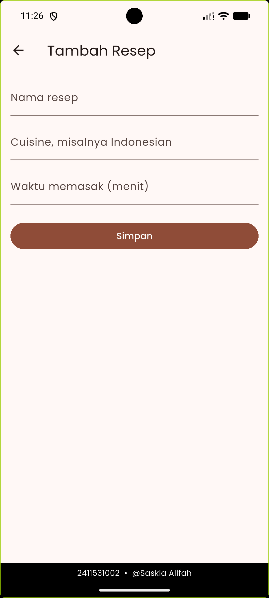
Tombol FloatingActionButton ditambahkan pada HomePage. Ketika ditekan, aplikasi membuka AddRecipePage menggunakan Navigator. Jika halaman form mengembalikan objek resep, HomePage menampilkan SnackBar yang berisi nama dan ID hasil response server.
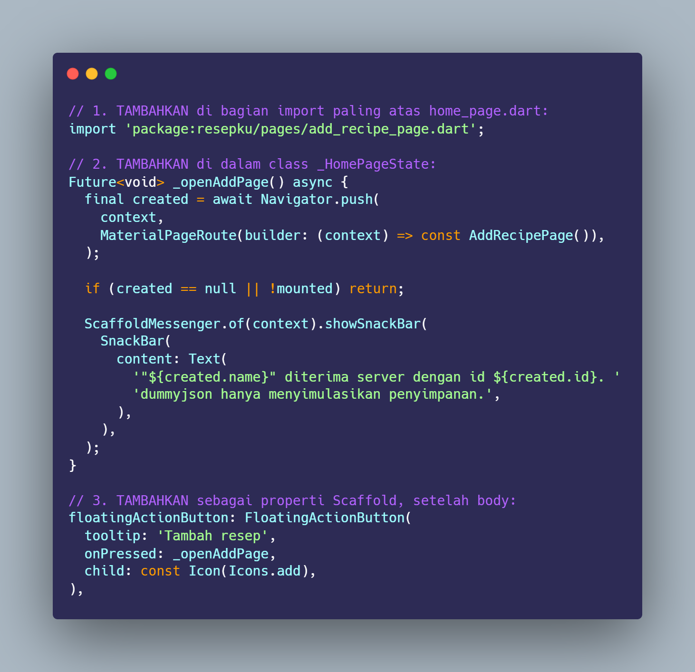
Navigator.push<Recipe>membuka halaman form dan menerima objek Recipe sebagai nilai kembalian.- Jika pengguna membatalkan form atau nilai hasil kosong, proses berhenti.
- Jika response berhasil, SnackBar menampilkan nama resep dan ID baru yang diberikan server.
- HomePage memeriksa
mountedsetelah proses navigasi asynchronous sebelum menggunakan context.
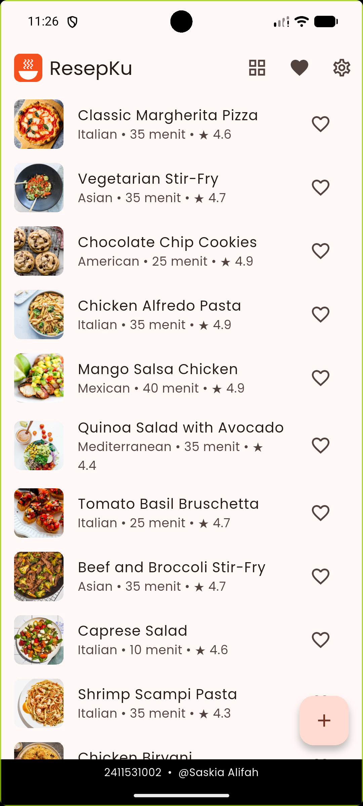
Pengujian dilakukan dengan dua kondisi. Pertama, tombol Simpan ditekan ketika form masih kosong. Validasi harus menampilkan pesan wajib diisi dan request tidak boleh dikirim. Kedua, form diisi dengan nama Rendang, cuisine Indonesian, dan waktu memasak 180 menit, kemudian tombol Simpan ditekan.
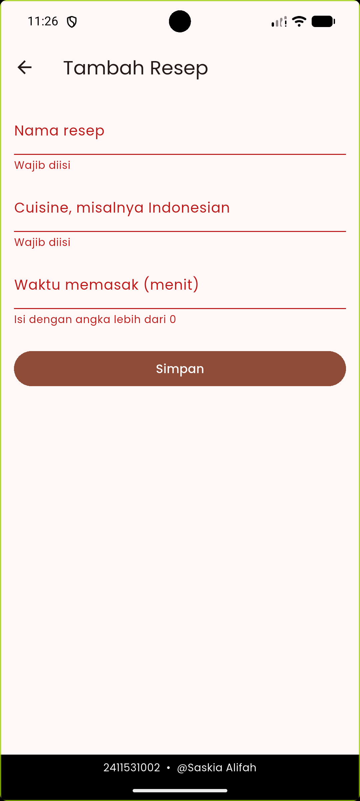
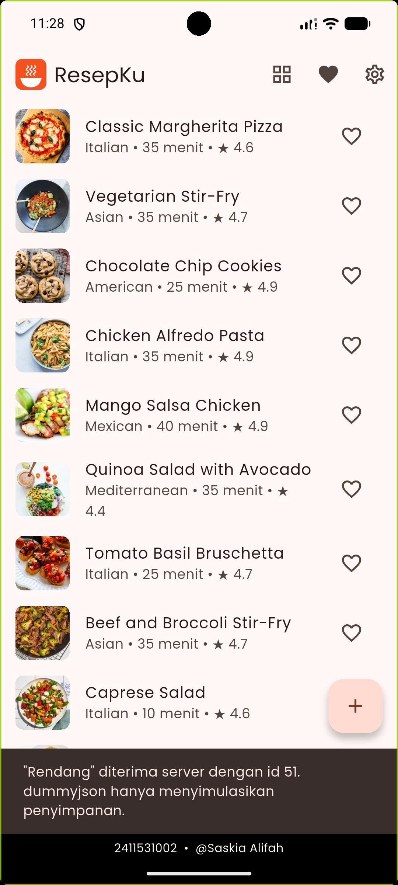
Pengujian dilakukan dengan menjalankan aplikasi dan mencoba tujuh skenario yang ditetapkan pada Modul Praktikum 8. Hasil pengamatan dicatat dengan membandingkan perilaku aplikasi terhadap hasil yang diharapkan.
| No. | Skenario | Hasil yang diharapkan | Hasil pengamatan |
|---|---|---|---|
| 1 | Membuka aplikasi | Indikator loading muncul, kemudian 50 resep dari server ditampilkan. | Daftar resep dimuat melalui request GET. |
| 2 | Menandai dua resep sebagai favorit, kemudian melakukan refresh. | Ikon hati tetap merah dan badge tetap menunjukkan jumlah 2. | State favorit tetap terkait dengan ID resep. |
| 3 | Menekan tombol grid lalu kembali ke list. | Tidak muncul indikator loading baru. | Future yang sudah disimpan digunakan kembali. |
| 4 | Membuka detail salah satu resep. | Foto, porsi, bahan, dan langkah memasak tampil. | Detail membaca data Recipe dari hasil API. |
| 5 | Mengaktifkan mode pesawat lalu melakukan hot restart. | ErrorView tampil dengan tombol Coba lagi. | Kesalahan request ditampilkan melalui state error. |
| 6 | Mematikan mode pesawat dan menekan Coba lagi. | Daftar resep dapat dimuat kembali. | Request baru dijalankan melalui _reload(). |
| 7 | Mengirim resep baru melalui tombol +. | SnackBar menampilkan ID dari server. | Response POST ditampilkan kepada pengguna. |
Setiap proses refresh menghasilkan objek Recipe baru karena data kembali dibentuk dari JSON. Meskipun objeknya berbeda, identitas resep tetap sama karena memiliki nilai id yang sama dari server. FavoriteProvider membandingkan resep berdasarkan identitas/ID tersebut, bukan hanya berdasarkan alamat objek di memori. Oleh karena itu, ketika daftar dibangun ulang, resep dengan ID yang tersimpan di daftar favorit tetap dikenali sebagai favorit dan ikon hati tetap aktif.
Future request disimpan di variabel _recipesFuture dan dibuat satu kali pada initState(). Ketika tombol grid ditekan, yang berubah hanya state tampilan _isGrid, sedangkan Future yang dipakai FutureBuilder tetap sama. Jika fetchRecipes() ditulis langsung di dalam build(), setiap rebuild berpotensi menjalankan request baru. Akibatnya, pergantian tampilan list dan grid dapat menyebabkan pemanggilan API berulang dan indikator loading muncul kembali.
Pertama, pemisahan tanggung jawab membuat widget hanya mengurus tampilan dan interaksi, sedangkan proses HTTP, parsing JSON, timeout, dan pemeriksaan status terpusat di RecipeService. Kedua, service lebih mudah diuji dan digunakan ulang karena client dapat diganti dengan MockClient tanpa internet. Pemisahan ini juga memudahkan perubahan endpoint atau aturan komunikasi tanpa harus mengubah seluruh widget.
DummyJSON hanya menyimulasikan operasi POST. Server memberikan response berisi data resep dan ID baru, tetapi tidak menyimpan perubahan secara permanen pada dataset. Karena itu, request GET berikutnya tetap mengembalikan data asli. Pada aplikasi dengan backend sungguhan, server biasanya menyimpan data ke database setelah validasi. Aplikasi dapat menampilkan hasil dengan menambahkan objek response ke daftar lokal atau mengambil ulang daftar dari server.
Baris if (!mounted) return; mencegah kode menggunakan BuildContext, melakukan navigasi, atau menjalankan setState() setelah halaman sudah tidak berada di widget tree. Contohnya, pengguna menekan Simpan lalu menutup halaman form ketika request masih berjalan. Saat response diterima, halaman mungkin sudah dibuang. Pemeriksaan mounted memastikan proses berhenti dengan aman sehingga tidak terjadi kesalahan penggunaan State atau context setelah widget di-dispose.
Latihan 1 menambahkan fitur pencarian yang dibuka dari ikon kaca pembesar pada AppBar Home. Pengguna mengetik kata kunci, menekan Enter, kemudian hasil pencarian ditampilkan melalui FutureBuilder.
Method searchRecipes(String query) mengirim request GET ke endpoint pencarian. Parameter query dibangun menggunakan Uri.replace(queryParameters: ...) agar spasi dan karakter khusus di-encode dengan benar.
- Endpoint menggunakan pola
/recipes/search?q=.... - Hasil pencarian tetap diubah menjadi
List<Recipe>melaluiRecipe.fromJson. - Pemeriksaan status dan timeout menggunakan mekanisme yang sama seperti fetchRecipes.
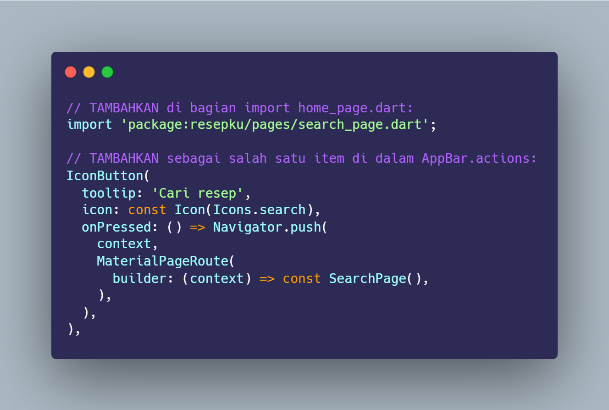
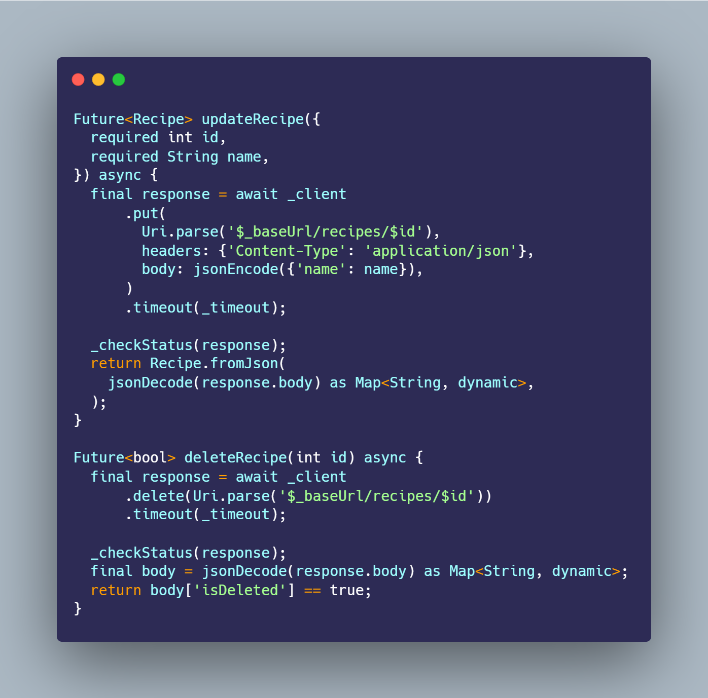
File lib/pages/search_page.dart dibuat sebagai StatefulWidget. Halaman memiliki TextField pada AppBar dan field Future<List<Recipe>>? yang bernilai null sebelum pengguna melakukan pencarian.
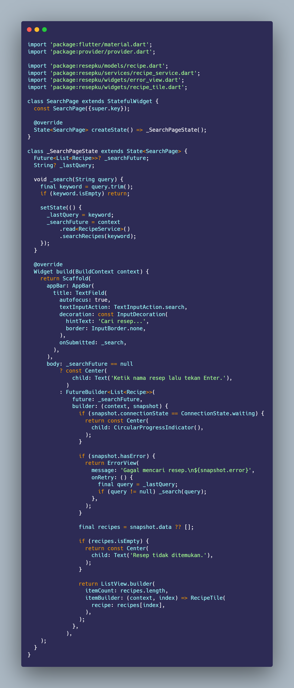
- Pengguna mengetik kata kunci pada TextField.
- Event
onSubmittedmembuat Future baru di dalamsetState. - FutureBuilder menampilkan loading, hasil, atau ErrorView.
- Jika daftar hasil kosong, halaman menampilkan pesan khusus bahwa resep tidak ditemukan.
- Setiap hasil menggunakan kembali widget
RecipeTile, sehingga tampilan foto, informasi resep, tombol favorit, dan navigasi detail konsisten dengan HomePage.
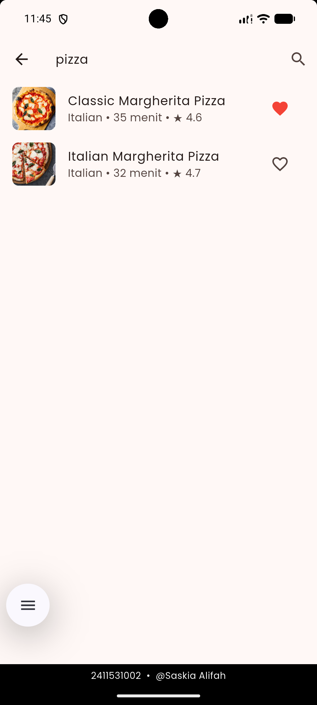
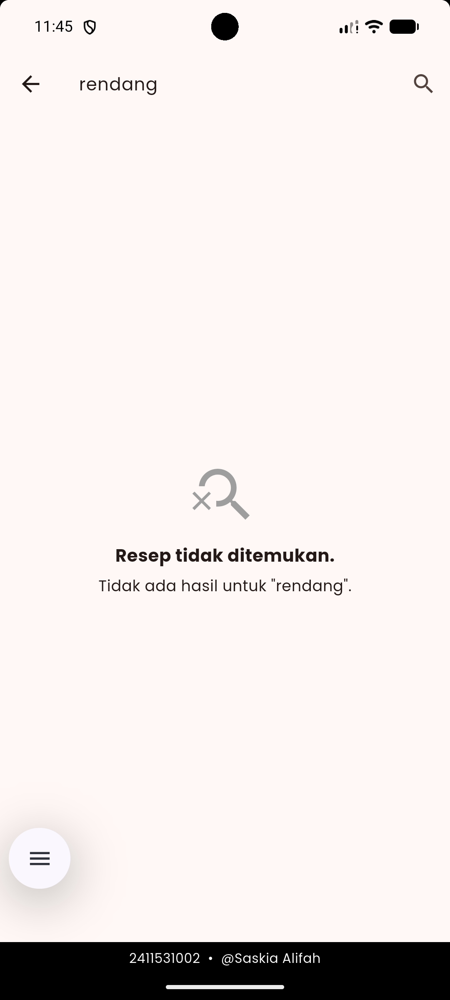
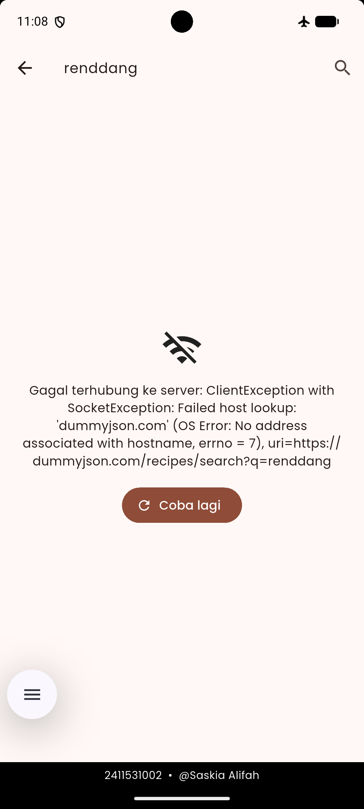
Latihan 2 menambahkan menu tindakan pada halaman detail. Karena halaman detail ResepKu menggunakan SliverAppBar, PopupMenuButton ditempatkan di dalam actions milik SliverAppBar setelah tombol favorit, bukan pada AppBar biasa.
Di RecipeService ditambahkan dua method. updateRecipe mengirim request PUT beserta body JSON yang berisi nama baru. deleteRecipe mengirim request DELETE, membaca response, lalu mengembalikan status isDeleted.
| Method | Request | Hasil yang digunakan UI |
|---|---|---|
updateRecipe | PUT /recipes/{id} Body: {"name":"Nama baru"} | Nama pada response ditampilkan di SnackBar. |
deleteRecipe | DELETE /recipes/{id} | Jika isDeleted == true, halaman detail ditutup dan pesan berhasil ditampilkan. |
- Dialog ubah nama berisi TextField untuk mengisi nama baru.
- Dialog hapus meminta konfirmasi sebelum request DELETE dilakukan.
- Setelah setiap operasi asynchronous, status
mounteddiperiksa sebelum menggunakan context atau mengubah UI. - Dialog ubah nama pada project ini menggunakan widget StatefulWidget khusus agar TextEditingController dikelola dan di-dispose pada lifecycle dialog.
- Setelah penghapusan berhasil, DetailPage ditutup dan SnackBar ditampilkan pada halaman sebelumnya.

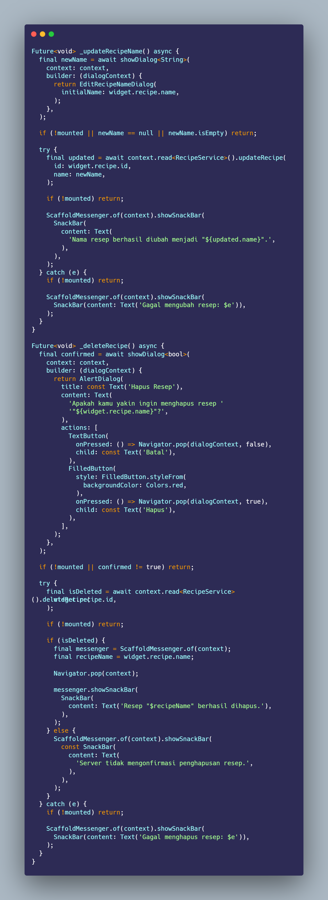
Menu titik tiga menyediakan pilihan Ubah Nama dan Hapus Resep. Menu diletakkan setelah tombol favorit pada daftar actions SliverAppBar. Pengguna memilih aksi, kemudian aplikasi membuka dialog yang sesuai dan menjalankan request API setelah input atau konfirmasi diberikan.
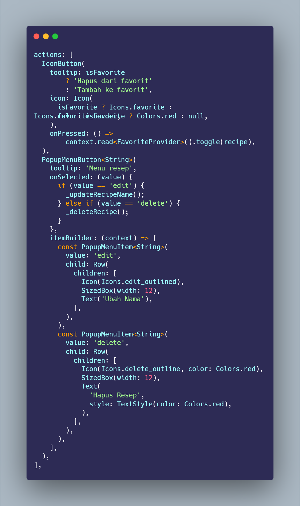
widget.recipe tidak diganti dan DummyJSON hanya menyimulasikan perubahan. Nama dari response server cukup ditampilkan di SnackBar.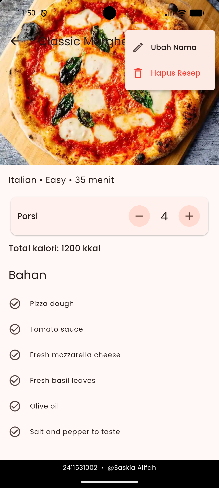
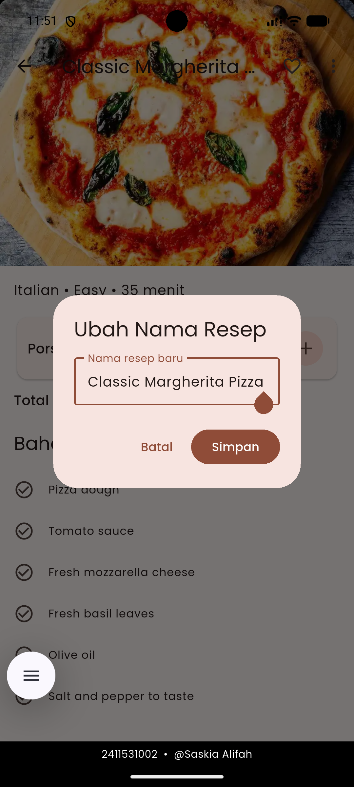
Untuk menguji PUT, pengguna memilih Ubah Nama, mengisi nama baru, lalu menekan Simpan. Aplikasi mengirim request dan menampilkan nama dari response server pada SnackBar. Untuk DELETE, pengguna memilih Hapus Resep, menyetujui dialog konfirmasi, lalu aplikasi mengirim request. Jika response mengandung isDeleted: true, halaman detail ditutup dan SnackBar penghapusan ditampilkan.
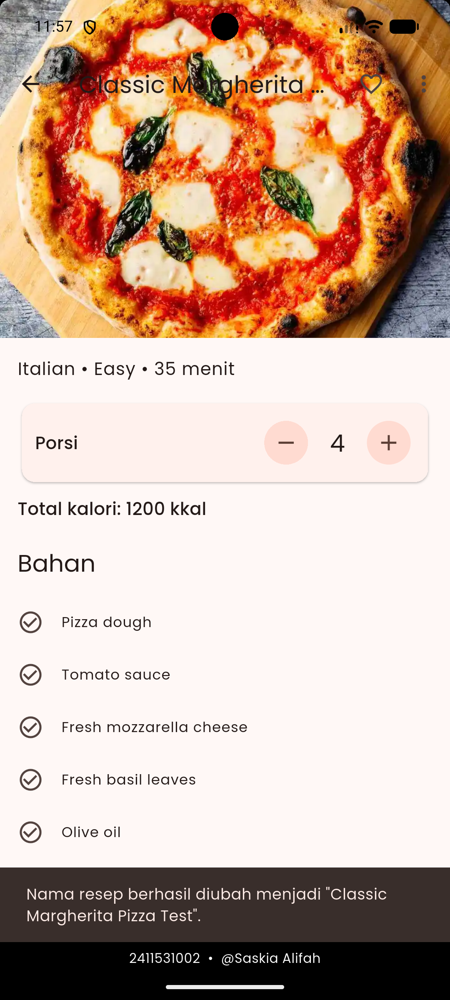
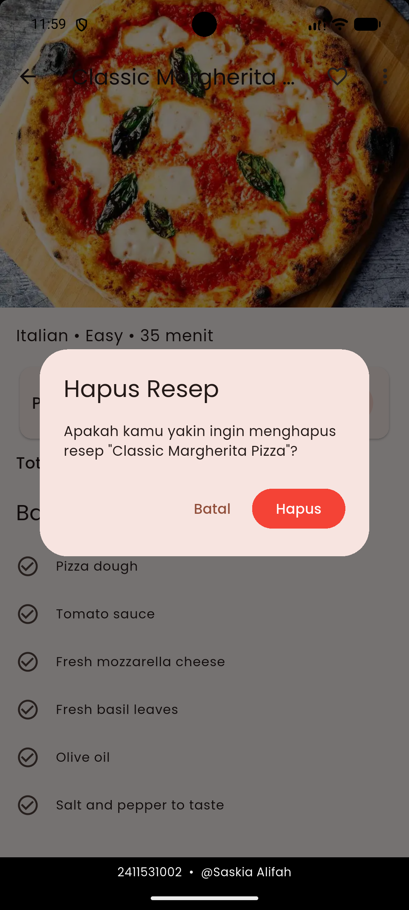
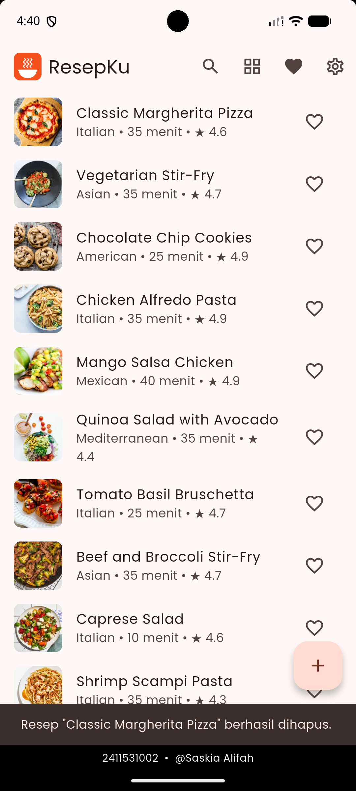
Latihan bonus membuat file test/recipe_service_test.dart untuk menguji proses parsing model dan request service. Pengujian memakai MockClient dari package:http/testing.dart sehingga respons dapat dibuat secara lokal tanpa menghubungi internet.
File test ditempatkan pada folder test/ di root project, sejajar dengan folder lib/. Test menggunakan flutter_test, http, dan MockClient. Service dibuat dengan memasukkan mock client melalui constructor.
MockClient((request) async { ... })menggantikan request HTTP sungguhan dengan response yang ditentukan di dalam test.- Response sukses menggunakan status 200 dan body JSON yang memiliki key
recipes. - Response gagal menggunakan status 404 untuk memeriksa apakah service melempar
RecipeServiceException. service.close()dipanggil setelah pengujian untuk menutup client.
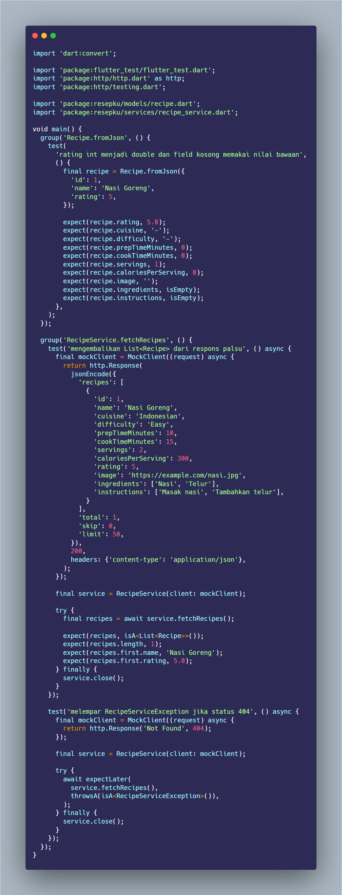
Pengujian dijalankan dari folder utama project ResepKu melalui terminal terintegrasi VS Code menggunakan perintah flutter test test/recipe_service_test.dart. Hasil pengujian menunjukkan tiga test berhasil dijalankan tanpa menghubungi internet.
Terminal menunjukkan +3: All tests passed!, yang berarti ketiga test berhasil dijalankan.
| No. | Test | Tujuan pemeriksaan | Hasil |
|---|---|---|---|
| 1 | Recipe.fromJson | Memastikan rating integer 5 dibaca sebagai 5.0 dan field opsional yang tidak ada memakai nilai bawaan. | Passed |
| 2 | fetchRecipes – response palsu | Memastikan response JSON palsu diubah menjadi List<Recipe>. | Passed |
| 3 | fetchRecipes – status 404 | Memastikan service melempar RecipeServiceException saat status bukan 2xx. | Passed |
00:21 +3: All tests passed!.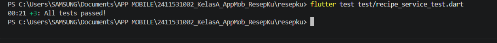
Hasil praktikum adalah aplikasi ResepKu yang tidak lagi bergantung pada daftar resep dummy di dalam kode. Data resep dimuat dari REST API melalui RecipeService, dipetakan menjadi objek Recipe, lalu ditampilkan pada HomePage menggunakan FutureBuilder. Fitur list, grid, favorit, pengaturan tema, detail resep, dan gambar dari Modul 6–7 tetap dipertahankan.
| Komponen | Hasil implementasi | Status |
|---|---|---|
| Model fromJson | JSON dikonversi menjadi Recipe; rating dikonversi ke double dan field opsional memiliki nilai bawaan. | Berhasil |
| GET dan FutureBuilder | Daftar resep dari server ditampilkan dengan loading, error, retry, serta refresh. | Diimplementasikan |
| Detail instructions | Langkah memasak ditampilkan menggunakan sliver pada halaman detail. | Diimplementasikan |
| POST tambah resep | Form memvalidasi input dan mengirim request. Response server menampilkan ID baru melalui SnackBar; data bersifat simulasi. | Simulasi API |
| Latihan 1 Search | Halaman pencarian memanggil endpoint search dan menampilkan hasil melalui FutureBuilder. | Diimplementasikan |
| Latihan 2 PUT/DELETE | Nama resep dapat dikirim untuk diperbarui dan penghapusan dilakukan setelah konfirmasi. | Simulasi API |
| Latihan 3 Unit Test | Tiga pengujian berhasil dijalankan dengan MockClient. | 3 Passed |
Pembahasan hasil. Pemisahan request ke dalam RecipeService membuat halaman tidak perlu mengetahui detail HTTP. FutureBuilder bertugas menghubungkan proses asynchronous dengan tampilan, sehingga pengguna memperoleh feedback ketika data sedang dimuat atau gagal diambil. Penggunaan Future yang disimpan pada state juga mencegah request berulang ketika pengguna hanya mengganti bentuk tampilan dari list ke grid.
Pengujian menggunakan MockClient menunjukkan bahwa RecipeService dapat diuji tanpa internet. Pengujian berhasil membuktikan konversi rating integer menjadi double, pembacaan daftar Recipe dari response palsu, serta penanganan status 404 melalui RecipeServiceException. Operasi tambah, ubah, dan hapus pada DummyJSON perlu dipahami sebagai simulasi, bukan penyimpanan permanen.
Berdasarkan pelaksanaan Praktikum 8 pada aplikasi ResepKu, dapat disimpulkan bahwa:
- REST API memungkinkan aplikasi memperoleh data dari server melalui request HTTP. Endpoint DummyJSON yang digunakan mencakup GET daftar resep, GET pencarian, POST tambah, PUT ubah, dan DELETE hapus.
- Model
Recipe.fromJson()mempermudah konversi JSON menjadi objek Dart. Konversinumkedoubleserta pemberian nilai bawaan untuk field opsional membantu mencegah kesalahan parsing. - Pemisahan komunikasi HTTP ke dalam
RecipeServicemembuat struktur program lebih terorganisasi dan mempermudah proses pengujian. FutureBuilderdigunakan untuk menampilkan loading, error, dan data berdasarkan kondisi Future. Future yang disimpan pada state mencegah request baru ketika hanya terjadi rebuild tampilan list atau grid.- Request POST membutuhkan validasi form dan penanganan response. Pada DummyJSON, operasi perubahan data hanya disimulasikan sehingga tidak menyimpan data secara permanen.
- Fitur pencarian, ubah nama, dan hapus resep memperluas interaksi pengguna dengan REST API. Pemeriksaan
mountedmenjaga agar UI tidak diakses setelah widget dilepas dari widget tree. - Unit test dengan
MockClientdapat dijalankan tanpa internet. Hasil+3: All tests passed!membuktikan ketiga pengujian model dan service berhasil.
Dengan demikian, ResepKu telah menerapkan proses integrasi API dari pengambilan data hingga pengiriman request, sekaligus menyediakan penanganan kondisi berhasil dan gagal serta pengujian otomatis pada service.
Seluruh source code aplikasi ResepKu untuk Praktikum Aplikasi Mobile dapat diakses melalui repository GitHub berikut: